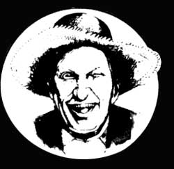

'Being in politics is like being a football coach. You have to be smart enough to understand the
game and dumb enough to think it's important."
Eugene McCarthy
"Democracy is that form of government where everybody gets what the majority deserves."
James Dale Davidson
Well sir, I oughta be hanged. I'd knowed it. But I kin't help myself. Every time I gits to thinking about the upcoming Demycrat and Republycan National Conventions, I can't help but recall an event once related to me by a feller named H. Allen Smith. It's sticking in my mind like that dog-awful Muzak tune you hear in the dentist's office right before they crank up the drill. So I figure I better just up and share it and be done with it.
Then when you watch this summer's conventions, see if this tale don't keep coming back into your mind.
Champion Hog-Caller
Several years ago I found myself in the pleasant community of Wilson in North Carolina. The town was in an abnormal state of excitement because of a championship hog-calling competition that was to be held in the local ball park. Normally I have small interest in such matters, but I was attracted to the contest for the reason that Olla Ray Boyd was one of the two participants. Mr. Boyd was a candidate (or governor of the state. He was reputed to be the best hog-caller in the South and on his calling cards (or hog-calling cards) identified himself as a hogologist. He was cheered and saluted and feted wherever he went, and because of the power of his hog-calling voice, his opinions were listened to and respected. It was only natural that such a man, every time election year came around, should run for governor. Somehow he never quite made it, but he went right on building up friendships by calling hogs from one end of the state to the other.
On the afternoon of the contest I made my way to the ball park and found a seat in the crowded stands. A platform had been erected between home plate and the pitcher's mound and the whole park had been decorated with bunting. A brass band played and some girls twirled batons and I sought enlightenment from the people sitting around me. I was told that ole Mist' Boyd had mebby finey met his match. Someone had dug up a lady by the name of Miz Johnson who was a hog-caller from who-laid-the-chunk.
When Olla Ray Boyd finally climbed to the platform the crowd broke into a wild demonstration. The man sitting next to me was tensed up like a drumhead. He jabbed at me with his elbow and exclaimed, "Yonda's a hwag-calluh! Ah mean hawg-calluh!" Then Mrs. Johnson was introduced and another great cheer arose from the stands. Mrs. Johnson was a lady of middle age, plainly dressed and appearing to be a little nervous.
After some preliminary speeches Olla Ray Boyd stood up and faced the crowd and when the applause faded away he launched into a brief speech, requesting that all present support him for governor. I don't recall just how he stated his qualifications but I seem to remember that he argued that a man with a firm command over hogs would be able to cope with members of the state legislature.
Throughout his little speech there were frequent cries from the audience. "Call 'em hawgs, Mist' Boyd!" And finally he called 'em.
To my everlasting regret I took no notes on Mr. Boyd's opening hog calls I only remember that they were impressively melodious and that not a sound came from the stands as he stood there bellow ing into the breeze. He went on for quite a while, changing tones, skipping from one octave to the next, adding little grace notes here and there, and then the crowd began to yell again. They were chanting "Boah, boah, boah!" The man next to me explained: "They want 'im to do the old boah messin' roun' the ole sow. He allus does it. Mind now."
Mr. Boyd did the old boar messing around the old sow. I have never been present when an old boar was messing around an old sow (otherwise I'd remember it), but apparently Mr. Boyd's take-off-of the old boar was perfection itself, for the crowd roared its approval. And then came the cries: "Slop 'em, Mist' Boyd! Slop 'em!" This called for Mr. Boyd's piece de resistance. He impersonated three hogs eating slop. He played all three characters at the same time, filling the air with enormous gruntings and snortings and snufflings and slobberings, and the crowd shrieked its delight. There is no question about it-Olla Ray Boyd is a man of heroic proportions. Completing his performance, he bowed to the stands, then turned and bowed to Mrs. Johnson and resumed his seat.
Now Mrs. Johnson stepped shyly to the front of the platform. She took hold of the rail with both hands, hung her head and began pawing lightly at the wooden floor with one foot. For a few moments I thought that her stage fright was going to prevent her from opening her mouth. Then she seemed to get a grip on herself. She raised her chin and let go.
She was a good fifty yards from me, but I had a feeling that I had been swept up suddenly in the middle of a cyclone. My toes curled up inside my shoes and my eyes seemed to have a strong tendency to cross. What Mrs. Johnson had to say was this:
"Hoooooooooooo-eeeeeeeeeeee!"
Then a pause. Followed by:
"Hoooooooooooo-eeeeeeeeeeee!"
Another pause. Followed by:
Hooooooooooob-eeeeeeeeeeee!
And after that:
"PIG-PIG-PIG-PIG-PIG!"
The people sat as though stunned. They knew. They knew that this was a precious moment, a moment to remember. They had heard a hog-call that was a hog-call.
Mrs. Johnson lowered her head modestly, returned to her chair, and sat down. Olla Ray Boyd got up, walked over and shook hands with her and said something to her. My neighbor interpreted this move: "He ast 'er to do it again. She don't wanna do it again. Airy hawg didn't hear it the first time, he's pure deef"
The judges ... now went into a huddle and quickly acclaimed Mrs. Johnson as the winner. I felt a little sorry for Olla Ray Boyd and asked my neighbor if this defeat would hurt his political chances.
"Nawp," he said. "Mist' Boyd, he's still the best at what he does. He can do them three hawgs eatin' slop so good you can shet your eyes and you're right smack-dab in th' pigpen. But he's more of a platfawm hog-calluh. He calls hawgs for the benefit of people. That Miz Johnson there, she calls hawgs for the benefit of hawgs. They's a difference."
'Bad officials are elected by good citizens who do not vote. "
George Jean Nathan
"Democracy is the recurrent suspicion that more than half the people are right more than half the time."
E.B. White
|
 |
|
|